Xiva - qadimiy devorlar, minoralar va loydan qurilgan betakror binolar shahri. Islom hamkorlik tashkilotining (IHT) Bokuda boʻlib oʻtgan XI sessiyasi doirasida Xiva 2024-yilda islom olamining turistik poytaxti deb eʼlon qilindi!
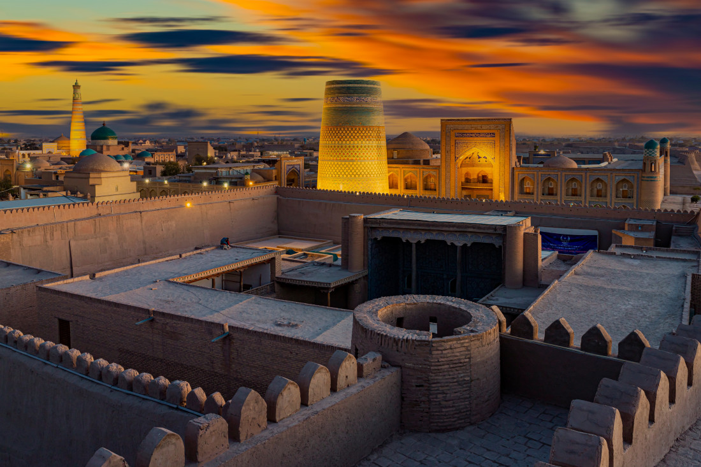Xivaning yoshi 2500 yildan oshgan. Agar siz tarixga sho‘ng‘ishni va qadimiy Sharqning haqiqiy go‘zalligini ko‘rishni istasangiz, Xivaga tashrif buyuring.
Qadimgi Xiva YUNESKOning Butunjahon merosi ro‘yxatiga kiritilgan. Va shunga ko‘ra, barcha diqqatga sazovor joylar dunyo tashkilotining himoyasi ostiga olingan.
✔️ Asosiy qalʼa - Ichan-Qalʼa, Kunya-Ark qalʼasi, Dishan-Qalʼa;
✔️ Xivada yuzdan ortiq qadimiy minoralar, maqbaralar, masjid va madrasalar mavjud;
✔️Xiva hukmdorlarining saroylari va turar joylari;
✔️ Qadimiy karvonsaroylar va hammomlar;
✔️ Davlat qo‘g‘irchoq teatri va Avesto muzeyi.
Joylar, odamlar, voqealar - siz eng qiziqarlilarini bizning fotogalereyamizda topasiz!
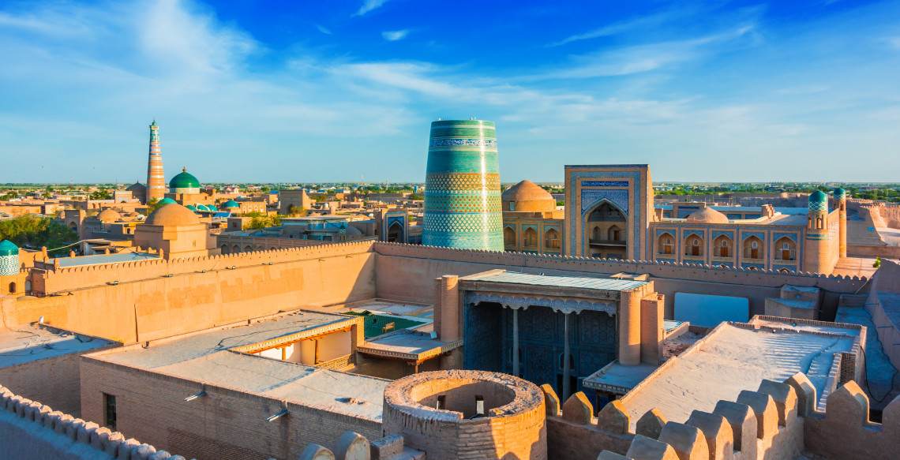 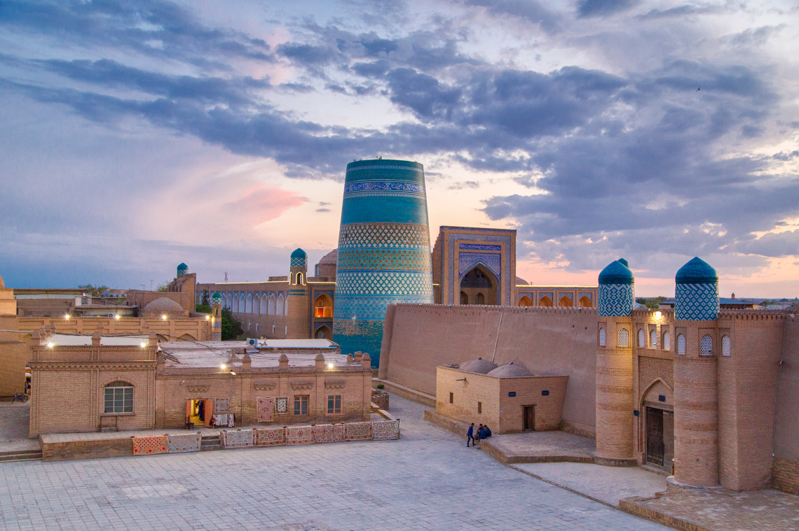 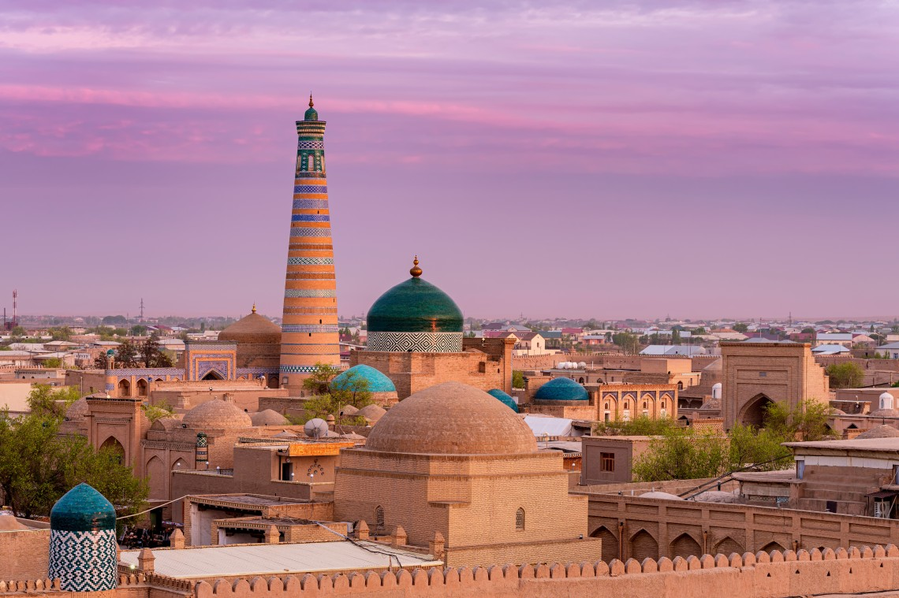Xivadagi iqlim quruq va cho‘l ob-havosiga o‘xshash. Yoz issiq, lekin shamolli, qishda esa harorat ko‘pincha 0 ° S dan pastga tushadi, shuning uchun issiq kiyimlaringizni unutmang! Ular sizga kerak bo‘lib qolishi mumkin.
O‘zbekistonning boshqa shaharlarida kabi Xivada ham turli xil suvenir, sovg‘alarni sotib olish mumkin. Ular orasida faqat Xorazm viloyatida sotib olinishi mumkin bo‘lgan juda qiziq narsalar bor. Birinchisi – qo‘lda yasalgan qo‘g‘irchoqlar. Xiva hududida qo‘g‘irchoq teatri mavjud bo‘lib uning yoshi 2000 yilga yaqin! Shu sababli, sahnada namoyish etish uchun qo‘g‘irchoqlar tayyorlash asrlarga borib taqaladi, ammo hozirgacha qo‘g‘irchoq spektakllarga bo‘lgan muhabbat yo‘qolmagan. Xorazmliklarning asosiy xislatlaridan yana biri qadimgi davrlardan beri tayyorlanadigan Cho‘g‘irma bosh kiyimlaridir. Ko‘rinishidan u juda katta va og‘irdek tuyuladi, lekin aslida u juda yengil va qulay. Cho‘g‘irma boshda maxsus mikroiqlim yaratib, yozda qizib ketishdan, qishda esa sovuqdan saqlaydi. Qadimgi davrlarda bunday cho‘g‘irmalar juda qimmat bo‘lgan. Ularning narxi tuya narxiga tenglashtirilgan, shuning uchun uni faqat badavlat odamlar sotib olishlari mumkin edi. Hozirda uning narxi ancha past va g‘ayrioddiy bosh kiyimlarni sevuvchilarga yoqishi aniq! Shuningdek, Xiva hududida turli xil yog‘och hunarmandchilik buyumlarini sotib olishingiz mumkin. Mahalliy hunarmandlar mayda shaxmat donalaridan tortib to hassa va hatto o‘yma eshiklargacha hamma narsani yaratadilar! Har qanday nozik didli bo‘lsangiz ham, mahalliy hunarmandlar sizni mamnun qila olishadi.
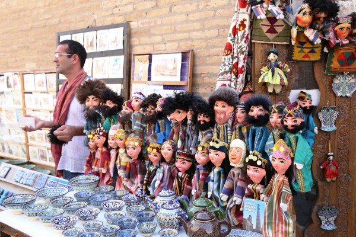 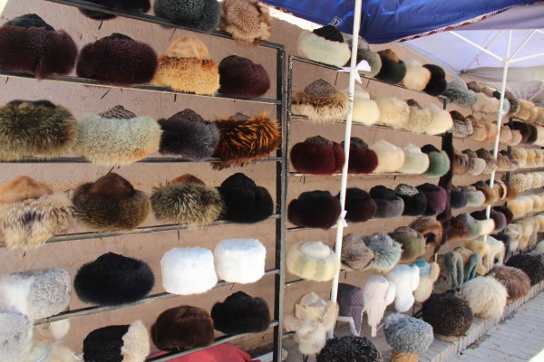 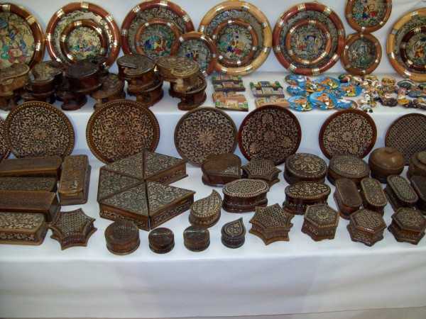Retseptlar mintaqadan mintaqaga qarab o‘zgarib turadi. Agar siz turli shaharlarda bitta taomni tatib ko‘rsangiz, uning taʼmi qanchalar farq qilishidan hayratlanasiz! Tabiiy sharoiti juda qiyin bo‘lganligi sababli Xorazm oshxonasining taomlari O‘zbekistondagi o‘ziga xos taomlardan hisoblanadi. Ko‘pincha bitta noodatiy taomni uchratishingiz mumkin ... U “qaynatilgan tuxum” deb tarjima qilingan “tuxum-barak” deb nomlanadi. Siz g‘ayrioddiyligi nimada deb so‘rashingiz mumkin? Tayyor taom shakli qaynatilgan chuchvaraga o‘xshab ketadi, ammo ajoyibligi uning tayyorlanish usulidadir. Kesilgan xamir xom tuxum bilan to‘ldiriladi va oqib ketishga ulgurmasdan qaynab turgan suvga juda tez tashlanadi. Aytishlaricha bu taom xonlar uchun tayyorlagan. Bundan tashqari mahalliy xalqning eng sevimli taomi bu – baliqdir. Baliqlar Xivada beqiyos darajada tayyorlanadi va hatto dengiz mahsulotlarini yoqtirmaydigan odam ham mahalliy baliqni pishirishning o‘ziga xos uslubiga befarq bo‘la olmaydi, deyilsa mubolag‘a bo‘lmaydi. Shuningdek, shirin taomlardan yana biri bu Shivit Osh yoki Yashil lag‘mondir. Bu taomdagi lag‘monga yashil rang berish uchun maxsus texnikadan foydalangan holda shivit ko‘kati qo‘shib tayyorlanadi. U go‘sht va sabzavotli qayla hamda qatiq bilan tortiladi. O‘zbek oshxonasi haqida ko‘proq maʼlumotni ushbu havoladan o‘qishingiz mumkin.
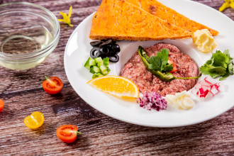 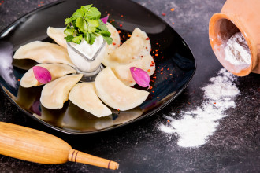Fotosuratlar har bir sayohatning ajralmas qismi hisoblanadi! Ushbu bo‘limda biz sizni Xiva shaharning eng go‘zal joylari bilan tanishtiramiz va albatta siz o‘zingiz uchun ajoyib lavhalar to‘plamiga ega bo‘lishingiz mumkin
P.S. Shuni unutmangki, O‘zbekistonning diniy diqqatga sazovor joylar hamda ziyoratgohlarga tashrif buyurganingizda ayollar tananing ochiq joylarini (yelka, bel va oyoq) yopib qo‘yish tavsiya etiladi, bunday diqqatga sazovor joylarda belgilar qo‘llaniladi. ☪️
☪️ Ichan-Qala hududida yomon surat tushira olmaysiz. Chunki atrofdagi barcha narsa o‘tmish muhiti bilan to‘yingan va ushbu ko‘chalarda yurib, siz zamon ruhini his qilasiz. Ammo maxsus kadrlar olishingiz mumkin bo‘lgan baʼzi joylar mavjud. Shunday joylardan biri X asrda qurilgan Juma masjididir. Uning o‘ziga xos xususiyati shundaki, unda kirish joyi va gumbazlar mavjud emas, binoning tomi turli o‘lchamdagi, shakldagi va hatto turli asrlarda tayyorlangan 213 ta ustunga o‘rnatilgan.
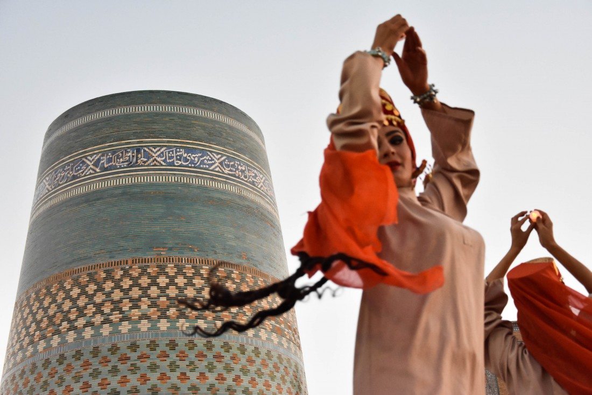Xiva – 2500 yil muqaddam barpo etilgan O‘zbekistondagi eng qadimiy shaharlardan biri. Shuningdek, ichida o‘rta asrlarga oid haqiqiy qalʼa – Ichan Qalʼa joylashgan yagona shahardir.

Haybatli shahar devori bilan o‘ralgan qadimiy qalʼa o‘rta asrlarning sharqona shahri qiyofasida gavdalanadi, uning har bir binosi meʼmoriy yodgorlik va alohida diqqatga sazovor joy hisoblanadi. Ajablanarlisi shundaki, mazkur tarixiy shahar-muzeyda odamlar hozirgi kunda ham yashab va ishlab kelishmoqda. Afsonaga ko‘ra, shahar Injil kitobida keltirilgan Nuh payg‘ambarning o‘g‘li Somning buyrug‘i bilan qazilgan Heyvak qudug‘i atrofida paydo bo‘lgan. O‘zining uzoq tarixi davomida Xiva Xorazm hukmdorlari turli sulolalarining hukmronligini boshidan kechirgan, ammo qadim zamonlardan beri doim uning poytaxti bo‘lib kelgan.
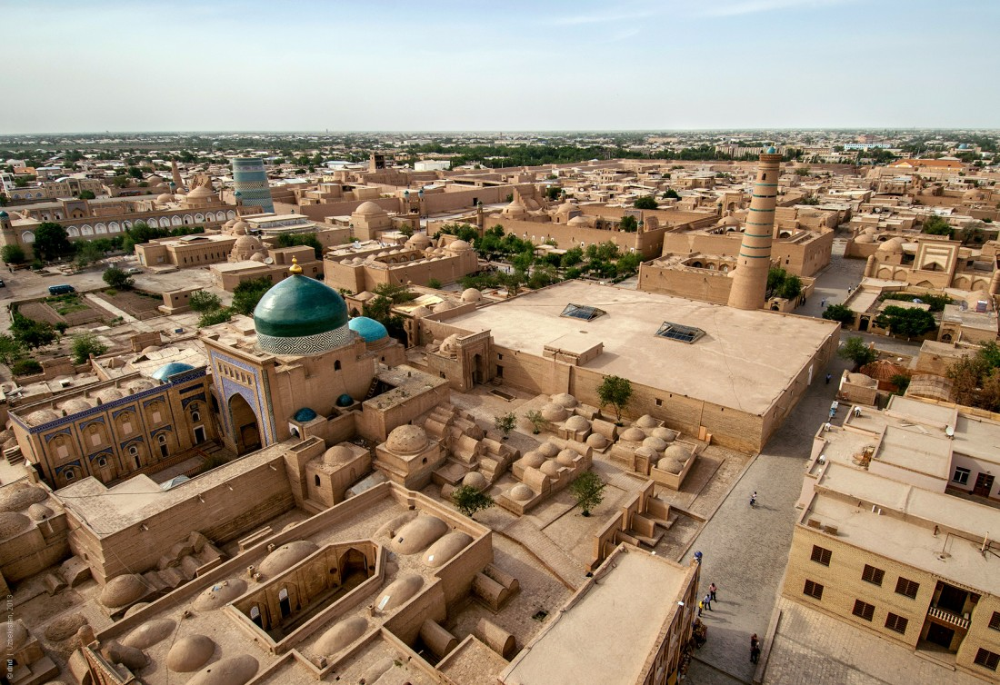Bu yerda hamma narsa o‘zgacha ko‘rinadi – oshxona, odamlar, nutq, hatto meʼmorchilik ham. Deyarli hamma narsa asl shaklida saqlanib qolgan. Ko‘chalar tosh bilan qoplangan. Shaxmat donalari kabi minoralar, madrasa gumbazlarini va masjidlarni har tomondan ko‘rinib turadi. Hatto zamonaviy binolar ham qadimgi ko‘rinishda bezatilib qurilgan.
1990 yilda shahar YUNESKOning Jahon merosi ro‘yxatiga kiritildi.